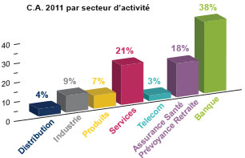

Secteur
Créée historiquement dans le secteur de la banque, UTiGROUP. a ouvert sont offre progressivement aux secteurs de la finance de marchés, de l’assurance, de la mutuelle et de la retraite, ainsi que de l’industrie et des services.

Produits
Banques/Finances
> Banque d’investissement
> Asset Management
> Titres
> Banque de détail
> Moyens de paiement
Assurances/
Mutuelle/retraite
Mutuelle/retraite
Industrie
services
services